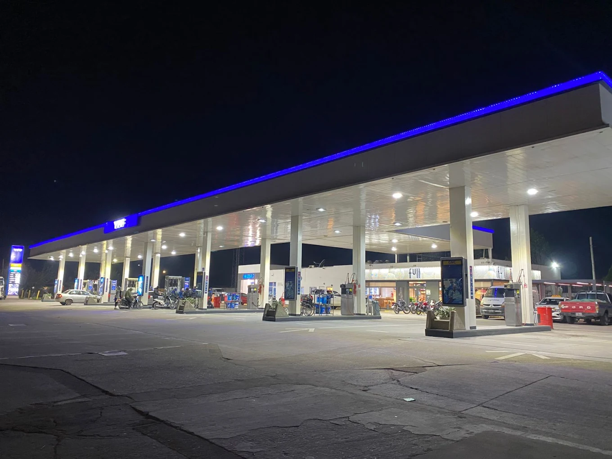
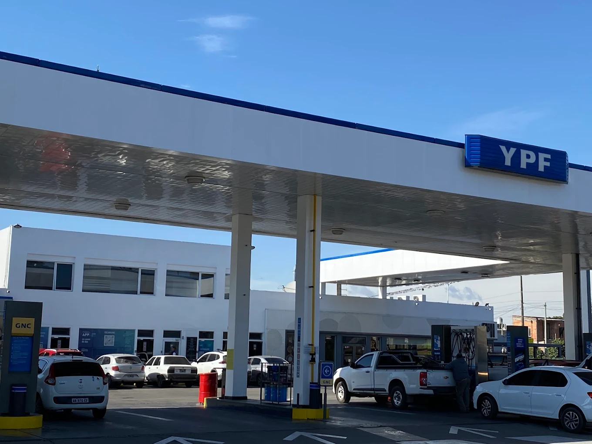

YPF · Full
GeoGas Jujuy
Jujuy 2400 · San Miguel de Tucumán
Sucursal clásica de GeoGas para combustible, GNC, tienda y atención rápida en la zona sur.
Sucursales
El Instagram de GeoGas Tucumán presenta tres ubicaciones principales: Jujuy 2400, Plazoleta Dorrego y Belgrano con Camino del Perú. Esta página queda lista para usar como mapa institucional.


Jujuy 2400 · San Miguel de Tucumán
Sucursal clásica de GeoGas para combustible, GNC, tienda y atención rápida en la zona sur.

Plazoleta Dorrego · Av. Sáenz Peña 890
Punto estratégico en la zona de Plazoleta Dorrego, con playa de combustibles, Full y servicios para el vehículo.

Av. Belgrano y Camino del Perú · San Miguel de Tucumán
La estación más nueva: arquitectura contemporánea, gran playa, Full vidriado, Boxes, GNC y accesos amplios.
Mapa
Los botones abren búsquedas directas en Google Maps para cada punto. Podés cambiar esos links por ubicaciones exactas si GeoGas te pasa los enlaces oficiales.